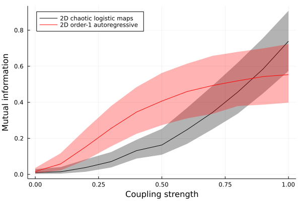

Mutual information
TransferEntropy.mutualinfo — Functionmutualinfo(x, y, est; base = 2, q = 1)Estimate mutual information between x and y, $I^{q}(x; y)$, using the provided entropy/probability estimator est from Entropies.jl, and Rényi entropy of order q (defaults to q = 1, which is the Shannon entropy), with logarithms to the given base.
Both x and y can be vectors or (potentially multivariate) Datasets.
Worth highlighting here are the estimators that compute entropies directly, e.g. nearest-neighbor based methhods. The choice is between naive estimation using the KozachenkoLeonenko or Kraskov entropy estimators, or the improved Kraskov1 and Kraskov2 dedicated $I$ estimators. The latter estimators reduce bias compared to the naive estimators.
Note: only Shannon entropy is possible to use for nearest neighbor estimators, so the keyword q cannot be provided; it is hardcoded as q = 1.
Description
Mutual information $I$ between $X$ and $Y$ is defined as
\[I(X; Y) = \sum_{y \in Y} \sum_{x \in X} p(x, y) \log \left( \dfrac{p(x, y)}{p(x)p(y)} \right)\]
Here, we rewrite this expression as the sum of the marginal entropies, and extend the definition of $I$ to use generalized Rényi entropies
\[I^{q}(X; Y) = H^{q}(X) + H^{q}(Y) - H^{q}(X, Y),\]
where $H^{q}(\cdot)$ is the generalized Renyi entropy of order $q$, i.e., the genentropy function from Entropies.jl.
Synthetic systems example
In this example we generate realizations of two different systems where we know the strength of coupling between the variables. Our aim is to compute mutual information $I(X; Y)$ between time series of each variable and assess how the magnitude of $I(X; Y)$ changes as we change the strength of coupling between $X$ and $Y$.
Defining the systems
Here we implement two of the example systems that come with the CausalityTools.jl package:
- A stochastic system consisting of two unidirectionally coupled first-order autoregressive processes (
ar1_unidir) - A deterministic, chaotic system consisting of two unidirectionally coupled logistic maps (
logistic2_unidir)
We use the default input parameter values (see ar1_unidir and logistic2_unidir for details) and below we toggle only the random initial conditions and the coupling strength parameter c_xy. For each value of c_xy we generate 1,000 unique realizations of the system and obtain 500-point time series of the coupled variables.
Estimating mutual information
Here we use the binning-based VisitationFrequency estimator. We summarize the distribution of $I(X; Y)$ values across all realizations using the median and quantiles encompassing 95 % of the values.
using CausalityTools, Statistics, Plots
# Span a range of x-y coupling strengths
c = 0.0:0.1:1.0
# Number of observations in each time series
npts = 500
# Number of unique realizations of each system
n_realizations = 1000
# Get MI for multiple realizations of two systems,
# saving three quantiles for each c value
mi = zeros(length(c), 3, 2)
# Define an estimator for MI
b = RectangularBinning(4)
mi_estimator = VisitationFrequency(b)
for i in 1 : length(c)
tmp = zeros(n_realizations, 2)
for k in 1 : n_realizations
# Obtain time series realizations of the two 2D systems
# for a given coupling strength and random initial conditions
lmap = trajectory(logistic2_unidir(u₀ = rand(2), c_xy = c[i]), npts - 1, Ttr = 1000)
ar1 = trajectory(ar1_unidir(u₀ = rand(2), c_xy = c[i]), npts - 1)
# Compute the MI between the two coupled components of each system
tmp[k, 1] = mutualinfo(lmap[:, 1], lmap[:, 2], mi_estimator)
tmp[k, 2] = mutualinfo(ar1[:, 1], ar1[:, 2], mi_estimator)
end
# Compute lower, middle, and upper quantiles of MI for each coupling strength
mi[i, :, 1] = quantile(tmp[:, 1], [0.025, 0.5, 0.975])
mi[i, :, 2] = quantile(tmp[:, 2], [0.025, 0.5, 0.975])
end
# Plot distribution of MI values as a function of coupling strength for both systems
plot(c, mi[:, 2, 1], label = "2D chaotic logistic maps", lc = "black",
ribbon = (mi[:, 2, 1] - mi[:, 1, 1], mi[:, 3, 1] - mi[:, 2, 1]), c = "black", fillalpha = 0.3,
legend = :topleft)
plot!(c, mi[:, 2, 2], label = "2D order-1 autoregressive", lc = "red",
ribbon = (mi[:, 2, 2] - mi[:, 1, 2], mi[:, 3, 2] - mi[:, 2, 2]), c = "red", fillalpha = 0.3)
xlabel!("Coupling strength")
ylabel!("Mutual information")
As expected, $I(X; Y)$ increases with coupling strength in a system-specific manner.